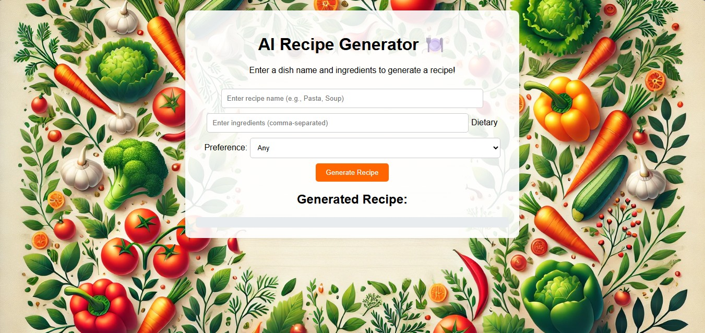

🍽️ AI Recipe Generator
The AI Recipe Generator is an intelligent web application designed to provide users with personalized recipe suggestions based on ingredients they have. It uses the power of Gemini 1.5 Pro (LLM) to understand user preferences and generate structured, creative meal ideas.
🔧 What It Does
Users input available ingredients and optionally specify dietary restrictions or meal types. The application then communicates with the Gemini API to generate a custom recipe suggestion, including:
- Dish Name
- Ingredients List
- Step-by-step Preparation Instructions
- Optional Cooking Tips and Substitutions
🖼️ How It Works – Screenshots
1️⃣ Initial Input UI
This form takes user input for ingredients and preferences.
2️⃣ Instructions Page
Displays how the AI will generate the recipe from your input.

3️⃣ AI-Generated Output
Gemini returns a full recipe including ingredients and steps.

🧰 Tech Stack
- Frontend: HTML, CSS, Tailwind CSS, JavaScript
- Backend: Python (Flask)
- API: Gemini-1.5-Pro API (Google Generative AI)
- Deployment: Render / Localhost for testing
🎯 Key Highlights
- Natural Language Processing powered by Gemini
- Clean UI with Tailwind CSS
- Fully responsive design (mobile/tablet friendly)
- Error handling for empty inputs and API failures
- Great learning project to understand Flask and LLM integrations